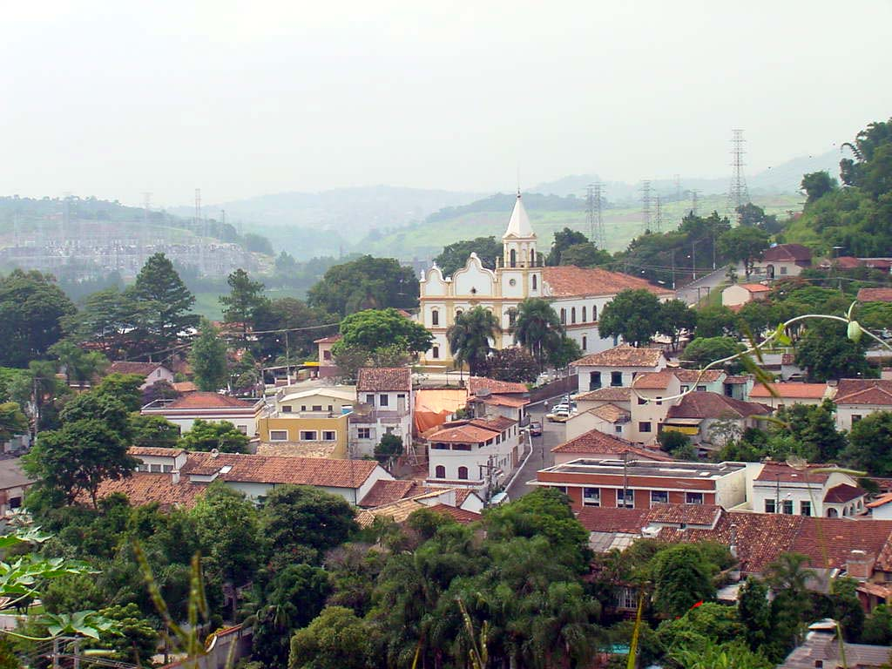
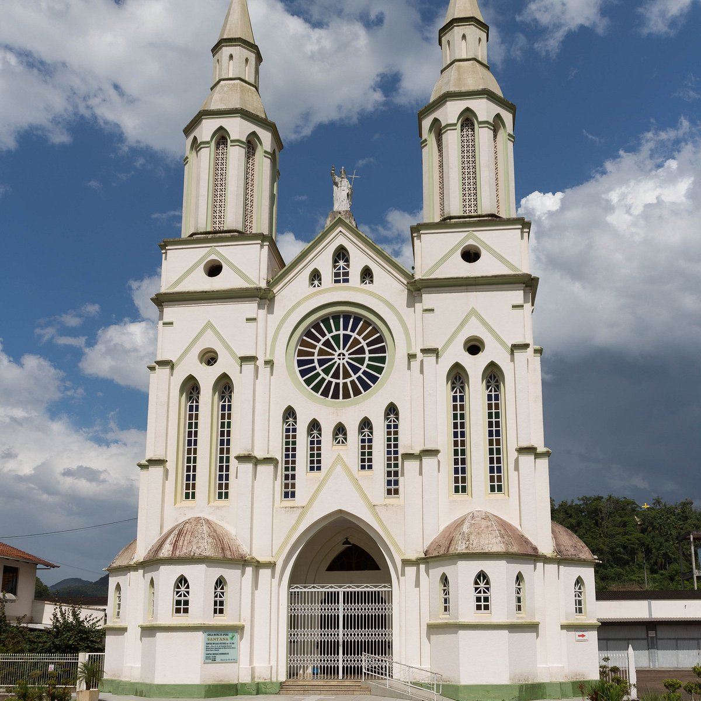
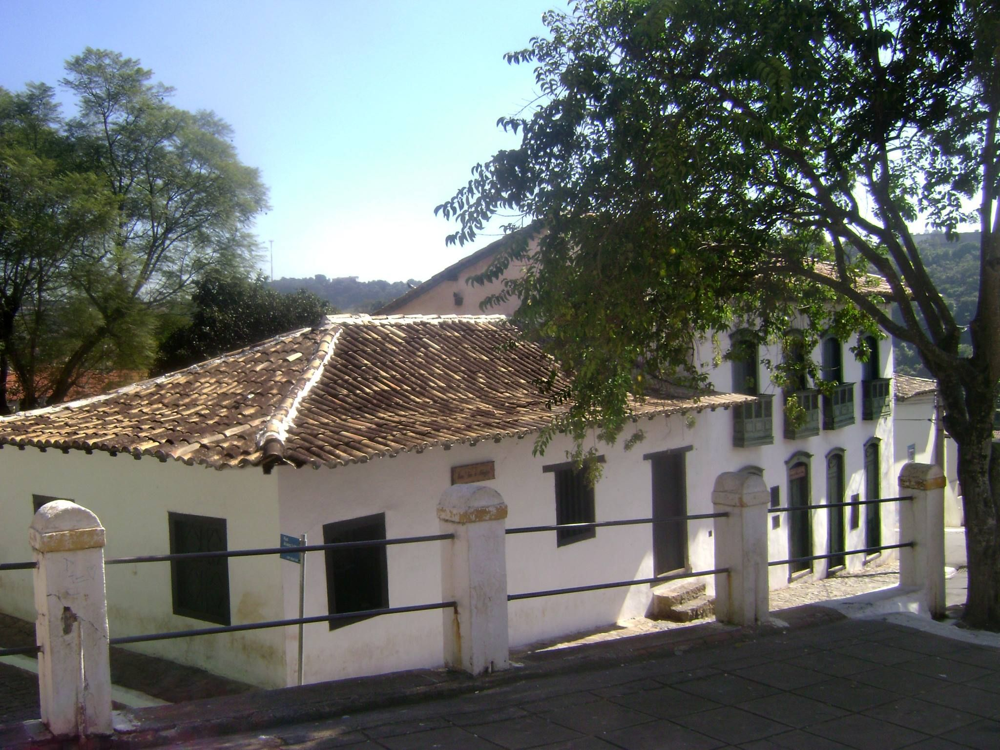
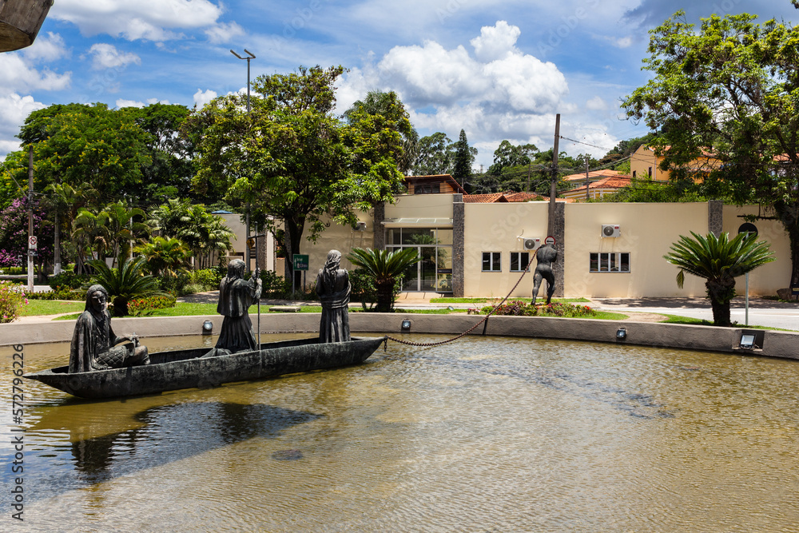

Santana de Parnaíba, situada na Região Metropolitana de São Paulo, é reconhecida como um verdadeiro tesouro histórico do estado. Fundada no século XVI, preserva grande parte de sua arquitetura colonial e mantém vivas tradições culturais que encantam visitantes. Além de ser uma das cidades mais bem preservadas do período colonial paulista, combina crescimento urbano com qualidade de vida, turismo cultural e belezas naturais.
Centro Histórico de Santana de Parnaíba – Conjunto de casarões coloniais, ruas de paralelepípedo e igrejas centenárias que remetem ao período do Brasil Colônia.
📍 Endereço: Praça 14 de Novembro – Centro, Santana de Parnaíba – SP.
Igreja Matriz de Sant’Ana – Construída originalmente em 1580, é um dos marcos mais antigos da cidade e referência de fé e história.
📍 Endereço: Praça 14 de Novembro, s/n – Centro, Santana de Parnaíba – SP.
Museu Casa do Anhanguera – Antiga residência de Bartolomeu Bueno da Silva, preserva objetos, móveis e documentos da época dos bandeirantes.
📍 Endereço: Praça 14 de Novembro, 67 – Centro, Santana de Parnaíba – SP.
Parque Municipal do Monumento aos Bandeirantes – Espaço verde com monumento em homenagem aos bandeirantes que partiram da região em expedições pelo interior do Brasil.
